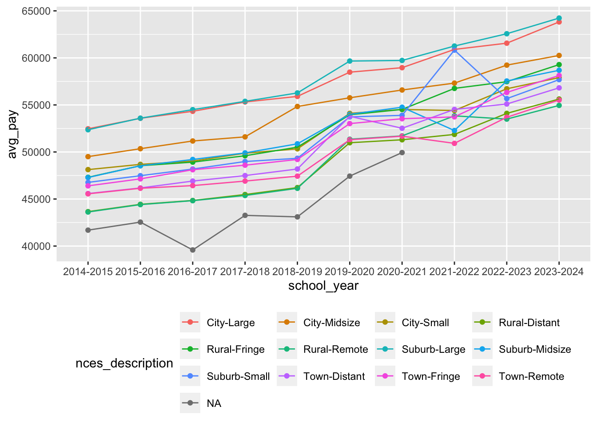
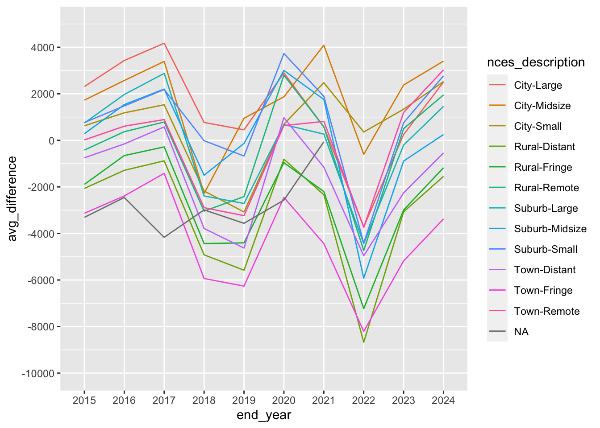

library(tidyverse)
library(janitor)
library(scales)
library(sf)
library(mapview)
library(RColorBrewer)AnalysisNCES
Setup
teaching_staff_totals <- read_rds("data-processed/teaching_staff_totals.rds")
salary_col_comparison <- read_rds("data-processed/salary_col_comparison.rds")NCES District Types
We decided not to use this so I moved the analysis I already did with NCES district types down here and didn’t continue to use it.
Count and Average Pay for NCES
teaching_staff_totals |> group_by(nces_description) |> count()Finding average pay per school year for each NCES district type.
district_types_nces_chart <- teaching_staff_totals |> group_by(nces_description, school_year) |>
summarize(avg_pay = mean(average_base_pay))`summarise()` has grouped output by 'nces_description'. You can override using
the `.groups` argument.district_types_nces_chartGraphing it.
ggplot(district_types_nces_chart, aes(x = school_year, y = avg_pay, color = nces_description, group = nces_description)) +
geom_point() +
geom_line() +
theme(legend.position = "bottom") +
guides(color = guide_legend(nrow = 4, byrow = TRUE))
Average and Median of difference between salary and ALICE for each NCES district type
salary_col_comparison |> group_by(nces_description) |>
summarize(avg_difference = mean(difference),
median_difference = median(difference),
number_of_districts = n()) |>
arrange(avg_difference)avg_difference_over_time_nces <- salary_col_comparison |> group_by(nces_description, end_year) |>
summarize(avg_difference = mean(difference))`summarise()` has grouped output by 'nces_description'. You can override using
the `.groups` argument.avg_difference_over_time_ncesggplot(avg_difference_over_time_nces,
aes(x = end_year, y = avg_difference, color = nces_description, group = nces_description)) +
geom_line() +
scale_y_continuous(limits = c(-10000,5000), n.breaks = 10)